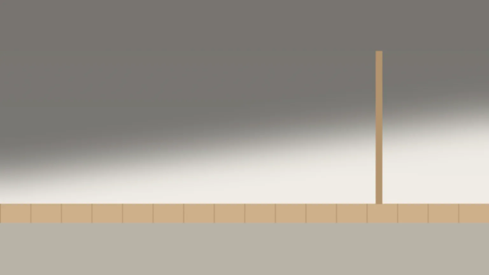
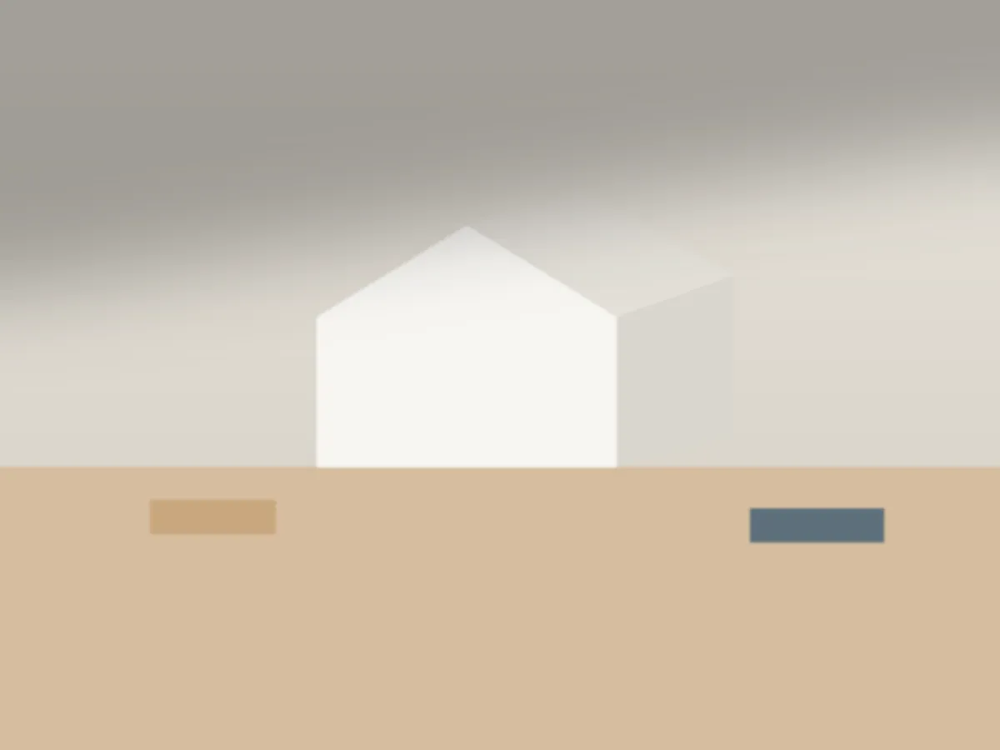
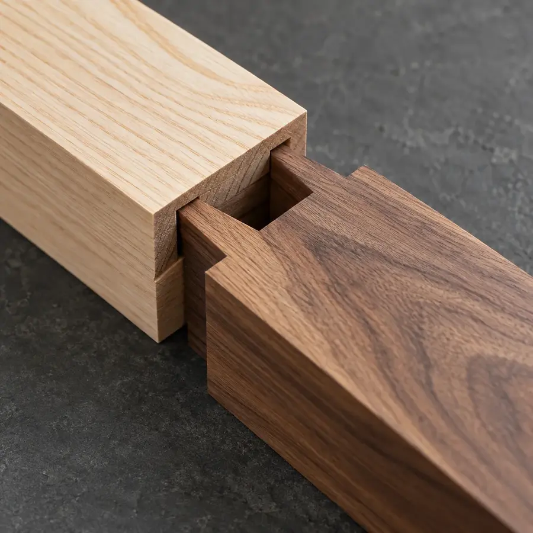
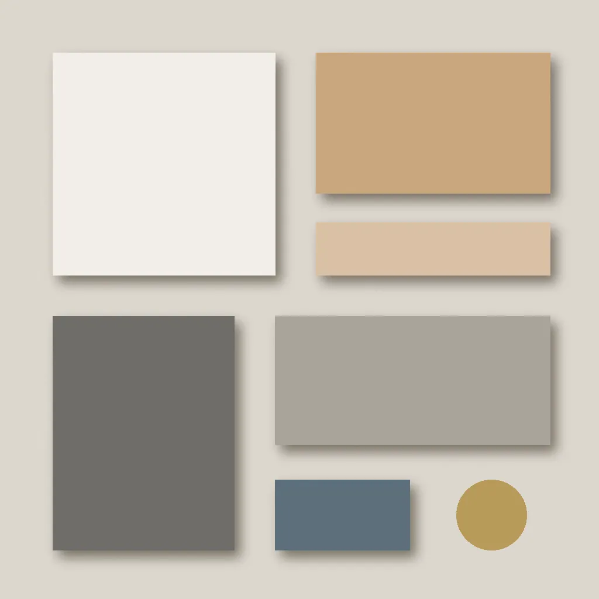
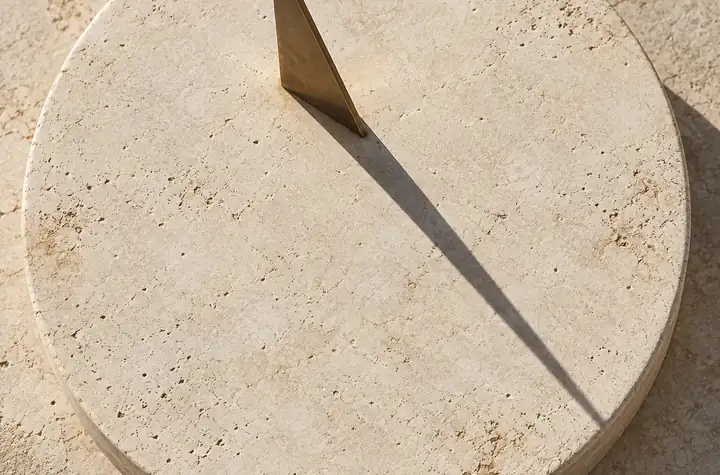
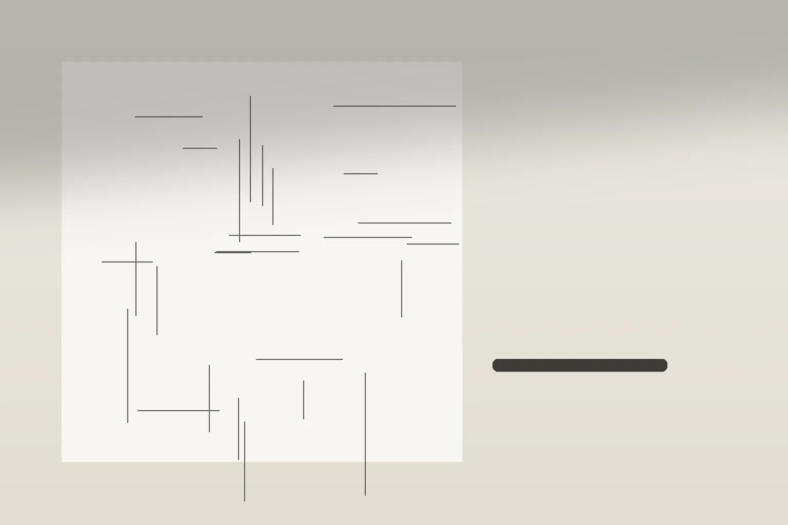
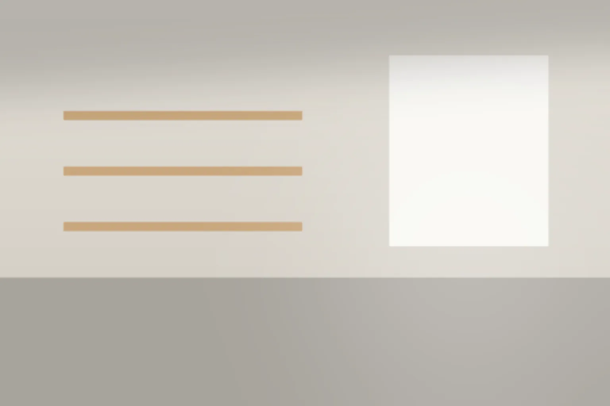

00扉
軒の下の、ちょうどいい暗さから考える。小さな住まいと店の設計室です。
図面より先に、光の入り方と素材の手ざわりを、白い模型を前に一緒に決めます。

- 扱う範囲
- 住まいの新築・改修と、小さな店の内装
- 進め方
- 相談 → 敷地を見る → ラフ2案 → 設計契約
01何をする事務所か
模型と素材を机に並べて、一緒に決めていく。
図面だけで話を進めず、白い模型と素材の見本を見ながら、部屋の大きさや窓の位置を決めます。工事は工務店に頼み、設計室は図面と現場の確認を受け持ちます。


02考え方
間取りより先に、光と素材の話をします。


i.光と影の量を、先に決める。
部屋の明るさは、窓の大きさより軒の深さで決まります。どこを明るく、どこを少し暗くしておくかを、間取りより先に話します。
ii.素材は、手で選ぶ。
漆喰・杉板・真鍮の取っ手。カタログの写真ではなく、手に取ってから決めます。見本は事務所の棚に置いてあります。

iii.ラフは、手で描く。
最初の間取りは、トレーシングペーパーに鉛筆で。話しながら描き直せる線で、2案を用意します。
03進め方と費用
契約の前に、かかる費用を先に。
相談から設計契約まで、4つの段階で進めます。金額はすべて税込です。各段階で何を用意するかは、進め方と費用のページへ。
- 1
初回相談
5,500円60分・事務所にて
- 2
敷地を見る
22,000円車で1時間までの距離
- 3
ラフの提案
55,000円契約すれば設計料に充てます
- 4
設計契約
設計料下の目安から
- 設計料（住まい）
- 工事費の 10〜12%
- 設計料（店の内装）
- 330,000円〜
- 店の内装の大きさ
- 30㎡ほどまで

05相談
まず、相談から。
敷地の場所、家族のこと、住みはじめたい・開店したい時期、予算のだいたいの幅。決まっていることだけで構いません。
返信は3営業日以内です。